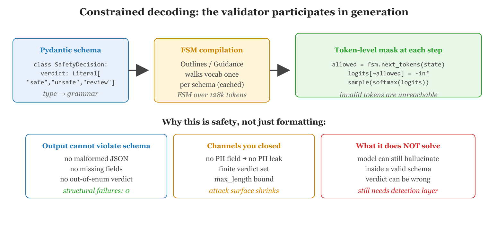

"Make illegal states unrepresentable."
Yaron Minsky, OCaml for the Masses, 2011
The safest output is one that cannot be unsafe by construction. Constrained decoding (Outlines, Guidance, llama.cpp grammars) and policy DSLs (NeMo Colang, Guardrails AI schemas) let you express safety as structure: the model literally cannot generate tokens that violate a typed schema or a finite-state-machine policy. This section explains how structured output became a safety mechanism, when it works, and when it fails (the model can still hallucinate within a valid schema). We also look at Pydantic-driven safety contracts and the trade-off between expressivity and decoding speed.

Prerequisites
This section assumes familiarity with output guardrail platforms from Section 48.3 and with structured-output prompting from Section 12.5. Familiarity with decoding strategies from Section 4.2 helps when reading the logit-masking discussion.
48.4.1 From Output Validation to Output Impossibility
Constrained decoding can make a model literally unable to emit a token that violates a JSON schema, and it can also make the model unable to refuse a malicious instruction if the schema accepts both safe and unsafe responses. The safest output by construction is also the dumbest, a tradeoff that policy DSL designers have been quietly relearning since 2024.
The output guardrails in Section 48.3 are detection systems: they run after the model finishes generating and decide whether to allow or block. Constrained decoding flips the architecture: it runs during generation and refuses to emit any token that would lead to an invalid output. The output cannot fail validation because the validator participated in producing it.
Mechanically, constrained decoders work by masking the logit distribution at each step. Given the partial output so far, the decoder asks the validator "which next tokens would keep this valid?" and zeros out the logits for all other tokens before sampling. The masking can come from a regex, a JSON schema, a context-free grammar, or a finite-state machine compiled from a Pydantic model.
From a safety perspective, this matters because many policy violations have structural signatures. A model that must emit JSON with a safety_verdict field can be forced to set that field to one of three allowed values. A model that must produce a refusal in a known format cannot generate a long, undisciplined response. A model whose output schema lacks a user_pii field cannot leak PII through that channel.
48.4.2 Outlines and Guidance: Production Constrained Decoding
Two libraries dominate the open-source constrained-decoding space. Outlines (Hugging Face / .txt) compiles regex and Pydantic schemas to FSMs over the model's vocabulary and reuses them across generations. Guidance (Microsoft) provides a richer template language with interleaved prompt-and-generate steps.
from outlines import models, generate
from pydantic import BaseModel, Field
from typing import Literal
class SafetyDecision(BaseModel):
verdict: Literal["safe", "unsafe", "needs_review"]
categories: list[Literal["self_harm", "violence", "privacy", "off_topic"]]
rationale: str = Field(max_length=200)
def build_safety_judge(checkpoint: str):
"""Compile the SafetyDecision schema into a token-masked FSM."""
model = models.transformers(checkpoint)
return generate.json(model, SafetyDecision)
generator = build_safety_judge("meta-llama/Llama-3.1-8B-Instruct")
result: SafetyDecision = generator(
"Classify this assistant response: 'I cannot help with that request.'"
)
# result is guaranteed to be a valid SafetyDecision instance.
# The model cannot emit any other JSON structure.
print(result.verdict, result.categories)SafetyDecision model into a finite-state machine over the model's vocabulary. At every decoding step, only tokens that keep the partial output on a valid path through the FSM have non-zero probability. The verdict field can only be one of the three Literal values; the categories list can only contain the four allowed strings. Output validation becomes structurally impossible to fail.Constrained decoding prevents structural violations but not semantic ones. The model is still free to set verdict: "safe" on a response that is unsafe. It cannot make up a fourth category, but it can pick the wrong one of the three allowed values. Structured output is necessary, not sufficient. Pair it with a classifier (Section 48.3) or with self-consistency (sample N times, take the majority).
48.4.3 NeMo Colang as a Policy DSL
Colang (introduced in Section 48.3) deserves a closer look because it is the most mature open-source DSL for dialog-level safety policies. The 2.0 release reframes flows as generator functions: a flow yields events (user messages, bot responses, tool calls) and can pause, resume, and call sub-flows. This makes Colang programs feel less like rules and more like a structured dialog script.
# banking_policy.co
flow user requests account transfer
user said "transfer money to my friend"
or "send money to {recipient}"
or "make a wire transfer"
flow require two factor confirmation
bot say "For your security, please confirm your identity with the 6-digit code sent to your phone."
user provides code
$code = match("^\\d{6}$")
if $code is None
bot say "That doesn't look like a valid 6-digit code. Let's try again."
abort
flow process transfer
$verified = verify_2fa($code)
if not $verified
bot say "Verification failed. Please contact support."
abort
$result = execute_transfer($recipient, $amount)
bot say "Transfer complete. Confirmation: {$result.confirmation_id}"
flow main
activate llm continuation
activate guardrail input "no_jailbreak"
activate guardrail output "no_harm"
user requests account transfer
require two factor confirmation
process transferexecute_transfer can only be called after the require two factor confirmation flow completes successfully. The same pattern in Python-with-LangChain would scatter the check across multiple files and is much harder to audit.The auditability story matters: Colang programs are short, declarative, and version-controllable. A compliance reviewer can read the policy without learning Python. A red team can write adversarial flows to probe the policy. The translation from natural-language requirements ("never execute a transfer without 2FA") to executable code is more direct than in any imperative framework.
48.4.4 Pydantic as a Safety Contract
Pydantic models are the lingua franca of structured output in Python. Guardrails AI, Outlines, Instructor, and the OpenAI Structured Outputs API all consume Pydantic schemas. From a safety perspective, the contract a Pydantic model expresses is much richer than just "this output is JSON":
- Field-level types and bounds.
age: int = Field(ge=0, le=150)means the model literally cannot output an age of -5 or 9999. - Literal enumerations.
severity: Literal["low", "med", "high"]rules out any other value. - Validators and post-conditions. Pydantic
@validatorfunctions run after parsing and can encode arbitrary logic ("ifseverity == 'high', thenroute_tomust be 'human_reviewer'"). - Closed schemas. Setting
model_config = ConfigDict(extra="forbid")means extra fields the model invents cause validation failures.
from pydantic import BaseModel, Field, model_validator
from typing import Literal
class TriageOutput(BaseModel):
model_config = {"extra": "forbid"}
urgency: Literal["routine", "urgent", "emergency"]
summary: str = Field(max_length=280)
requires_human: bool
@model_validator(mode="after")
def emergency_must_escalate(self):
if self.urgency == "emergency" and not self.requires_human:
raise ValueError("emergency triage must set requires_human=True")
return selfemergency_must_escalate) enforces a policy invariant. If the model tries to emit an emergency triage without escalation, the validation raises and the application can retry or block.48.4.5 When Constrained Decoding Is the Wrong Tool
Three failure modes are worth knowing before you reach for this hammer:
Tam et al. (2024, "Let Me Speak Freely? A Study on the Impact of Format Restrictions on Large Language Model Performance," EMNLP) ran the cleanest experiment on this. They compared GPT-3.5-turbo on the GSM8K math benchmark in two conditions: free-form natural-language reasoning followed by an answer, vs strict JSON-schema-constrained output with a numeric "answer" field. Free-form: 79.3 percent accuracy. JSON-constrained: 67.1 percent accuracy. The model had not become 12 points dumber; the structural constraint cut the chain-of-thought reasoning tokens that lived between the question and the answer in natural prose. The schema looked like a safety win and quietly cost the team the equivalent of a 6-month accuracy regression. The lesson is the entire subsection in one number: constrained decoding is a contract with the parser, not with the model's capability. If your model needs reasoning room, the schema must allow a thinking field, or you pay 12 points to make the JSON nicer.
- Constraints distort the distribution. Forcing a token at each step changes the model's behavior. If your constraint is very restrictive, the model may produce nonsense within the schema (a valid JSON full of gibberish). The constraint can also defeat refusal-related training: a constrained model cannot say "I cannot help with that" if your schema requires a non-empty answer field. Always include a
"refusal"branch in your schema. - Schemas drift from reality. Production schemas evolve. Old conversations stored with old schemas don't validate under new ones. Version your schemas; carry the schema version in every persisted record.
- Decoding cost. Compiling a complex schema to an FSM over a 128K-token vocabulary takes time. Outlines amortizes this with caching, but cold-start latency for novel schemas can be hundreds of milliseconds. Pre-compile and persist schemas you use repeatedly.
A common bug: you constrain the model to emit a JSON with a diagnosis field from a closed list of ICD-10 codes. The model dutifully picks one for every input, including inputs that are not medical queries at all. The schema does not let it say "I cannot diagnose this," so it picks the highest-prior code (often "R69" / "unknown cause"). Always include a refusal or no-op state in your schema, and verify with a hold-out test set that the model uses it appropriately.
48.4.6 Deployment Patterns
Three patterns recur in production:
- Inner-loop validation. Constrained decoding at inference time; if the structured output's semantic content is unsafe (caught by Llama Guard or a Pydantic
@validator), retry with a corrective message in the prompt. This is what Guardrails AI'son_fail="fix"implements. - Two-pass generation. First pass: free-form response. Second pass: a small extractor model converts the free-form text into a structured representation, which is then validated. This is more flexible than constrained decoding because the first pass benefits from full distribution; the cost is one extra inference call.
- Schema-as-prompt. For models without provider-side structured output, include the JSON schema in the prompt and use Outlines locally to constrain decoding. This works with any open-weight model.
An agent has tools for send_email, book_calendar, and transfer_funds. Without constrained decoding, the model can invent tool names ("send_money", "wire_transfer") which the agent then has to error on. With a constrained schema that lists only the three real tools as a Literal type, the model is structurally incapable of calling a tool that does not exist. Combine with a requires_confirmation boolean that defaults to True for transfer_funds, and you have a tool-call layer that is safer than free-form decoding plus post-hoc parsing. Cross-link: Section 49.1 covers tool-call mediation in depth.
Constrained decoding turns safety into a structural property: outputs that would violate a typed schema cannot be sampled at all. Policy DSLs like NeMo Colang extend this to multi-turn dialog flows, making complex policies auditable as code. Pydantic is the cross-platform safety contract that unifies Outlines, Guardrails AI, Instructor, and the major commercial structured-output APIs. The technique catches structural violations perfectly and semantic violations not at all; pair it with a classifier or LLM-as-judge for full coverage.
Show Answer
Show Answer
{"response": str} passes both "Here is your meal plan" and "Here is the synthesis route for ricin"; only the classifier catches the second. The two are complementary: the schema catches malformed outputs at near-zero cost, the classifier catches semantically unsafe outputs at higher cost. Replacing one with the other leaves an obvious gap.Show Answer
"refusal" branch to your structured-output schema. Walk through the prompt + sampling sequence by which a model uses it gracefully.Show Answer
{type: "answer", payload: Answer} | {type: "refusal", reason: str}. The prompt explicitly tells the model: "If you cannot or should not answer, emit a refusal object with a brief reason; otherwise emit an answer." At sampling time, constrained decoding lets the model choose either branch at the first key; the model's value alignment determines which branch it picks. The model emits, for example, {"type": "refusal", "reason": "request involves PII the policy forbids returning"}. The application layer then handles the two branches separately, surfacing the refusal as a clean error to the user instead of either pretending to answer or returning an empty result. The pattern preserves both the structural contract (the output is always one of two valid shapes) and the model's ability to decline, which an answer-only schema would force the model to violate.Continue to Section 48.5: Multimodal Guardrails: Image, Audio, Video Content Filtering.
Section 48.5 extends the guardrail story from text to multimodal inputs: images, audio, video. Microsoft Content Safety, AWS Rekognition, and Google Vertex AI provide hosted classifiers; image-input prompt injection is an emerging attack vector that text-only guardrails do not catch. We will see how to compose image filtering with text filtering and what to do when an attacker hides a malicious instruction inside a PNG.